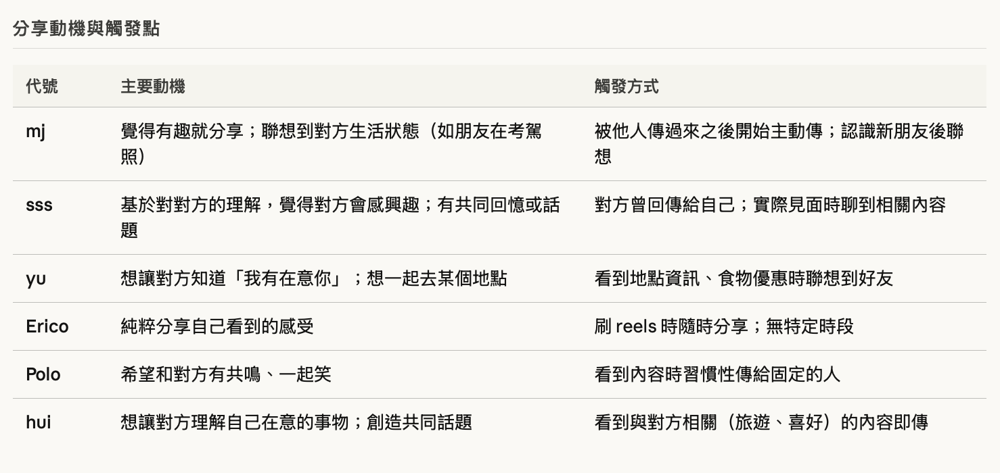
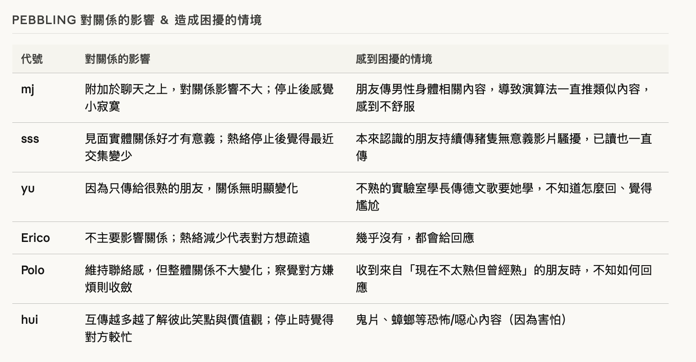
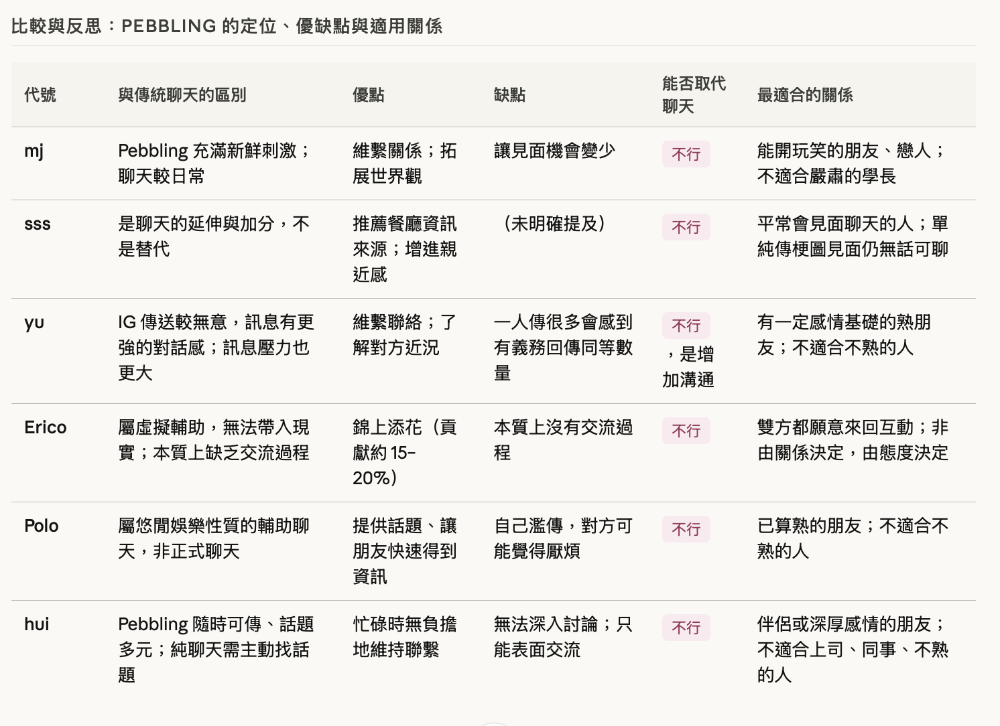

在當代社群媒體景觀中，人際互動正從以文字為中心的對話，轉向碎片化且媒體豐富的交換。傳統即時通訊常帶來顯著的認知負荷與高回覆期望。
本研究採用兩階段質性研究設計，核心在於深入的用戶訪談與分析，以捕捉定量數據可能遺漏的真實體驗。
我們將用戶的內部活動劃分為三個時間階段進行調查：

Fig 1. Pre-Pebbling
調查最初的分享觸發點與動機 。

Fig 2. During-Pebbling
研究感性溝通如何減輕社交焦慮。

Fig 3. Post-Pebbling
評估累積的「鵝卵石」如何培育環境感知與共時感。
在第二階段中，我們將範圍縮小，針對第一階段識別出的特定共同點進行深入調查，測試關於新技術如何重塑親密關係的具體假設。
本研究預計於三月啟動，並在六月完成最終論文提交與發表 。